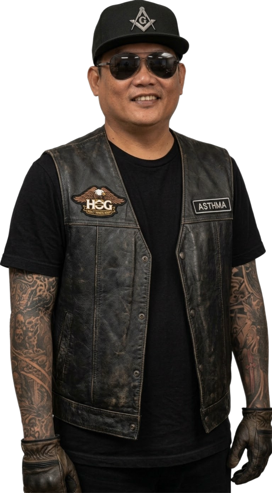

A passionate web developer and designer who specializes in creating
responsive and user-friendly websites — and who also provides airport
pickup and drop-off, secret services, and special handling and
shipping in the Philippines.
Professional Background & Experience
Licensed Utility Systems Operator and
US Army Reserve Veteran with over 10 years of
combined federal civil service, defense contracting, and military
logistics experience. Skilled in operating SCADA systems, conducting
water/wastewater quality laboratory testing, and automating
administrative workflows through software and database solutions.
Quick Highlights
Current Role: Utility Systems Operator (WG-5406-10) at NAVFAC NAS Lemoore
Certifications: California Water Treatment T2, Water Distribution D2, Wastewater WW1-OIT
Education: B.S. Computer Science | A.S. Information Technology (In Progress at West Hills College Lemoore)
A technology and music enthusiast from Oriental Mindoro,
Philippines, I have always loved tinkering with computers. Back in
the 1990s, my friend Jello and I spent endless hours coding together
as tech pioneers in our province. Jello was an accounting major who
was fantastic with numbers, as well as a talented pianist and bass
player.
After graduating with a BS in Computer Science, I moved to the
United States. My career here shifted away from technology, and over
time, my old programming skills in C++, Visual Basic, and COBOL
faded until I forgot how to code. I tried getting back into it with
PHP and MySQL, but I lost my appetite for manual coding once AI came
along. Lately, I have been leaning on AI to help build my personal
projects, even if I have been a bit lazy with them.
With retirement just a few years away, I recently went back to
college to get familiar with coding again. I am getting a little
forgetful, so studying programming helps sharpen my memory while
letting me enjoy the fun of learning and relearning. When I am not
at my computer, I still love playing basic guitar and drums to keep
my mind active and creative.
My Journey in Miles: The Cars (and Bike) That Moved Us

Life is an incredible journey, and when I look back at the
chapters of my life, I can often measure them by the vehicles that
got me there. From our humble beginnings on an island to setting
roots in California, here is the story of the rides that have been
part of the family.
Where It All Began: The Saipan Days (2007)
The story starts in 2007 in Saipan, the year my wife and I got
married. We were just starting our lives together and needed a way
to get around, leading us to our first-ever car: a used 2003 Mazda
3. We didn’t have much at the time, and I have to give a massive
shoutout to my fraternal brother, VW Loloy, who lent us the $500 we
needed to cover the downpayment. That car meant the world to us,
but our time with it was short. When my wife received her orders to
leave Saipan for basic training in the US Navy, we had to let it
go, eventually selling it to a local Korean taxi driver.
The California Transition (2008 – 2012)
In 2008, military orders relocated my wife to San Diego,
California, where she picked up a used 2002 Ford Focus to navigate
the city. I followed her out to San Diego shortly after and bought
myself a used 2003 Ford Explorer. Those early California years were
all about establishing ourselves. We eventually sold the Explorer in
2011, and a year later, in 2012, we traded in the trusty Ford Focus
for our first brand new car—a 2012 Honda Civic.
New Beginnings in Lemoore (2013 – 2015)
The year 2013 brought another big move, this time to Lemoore,
California. It was a time of new firsts; I got accepted for my
first job in the USA working at Home Depot, and to celebrate the
milestone, I bought a brand new 2013 Toyota Corolla. By 2015, we
were ready for something bigger and traded in our 2012 Honda Civic
for a brand new 2015 Ford F150, a truck that would serve us
faithfully for the next decade.
The Great Family Car Shuffle (2019 – 2021)
2019 was a year of giving back and trading up. We handed down our
2013 Toyota Corolla to my parents down in San Diego. In return, we
took their old 1992 Nissan Sentra and immediately used it as a
trade-in for a brand new 2019 Honda HRV. The spirit of giving
continued into 2020 when we bought a used 2002 Ford Escape
specifically to gift to my wife’s first cousin out in Las Vegas. In
2021, we decided to lean into fuel efficiency, trading the HRV for a
brand new 2021 Toyota Corolla Hybrid.
Finding the Brotherhood on Two Wheels (2022)
By 2022, I was deeply involved as an active member of the Masonic
Rider Association. Naturally, I needed a ride that fit the part. I
bought myself a brand new 2022 Harley-Davidson Street Bob. There is
nothing quite like the freedom of that bike. I still own it today,
and it’s coming with me to the Philippines when I finally retire.
Passing the Torch (2025)
After ten years of great memories and hard work, I finally parted
ways with my 2015 Ford F150 in 2025. I didn't have to look far for a
buyer, happily selling it to my good friend and fraternal brother,
Ron.
What We Drive Today
Currently, we are rolling into the future with an all-2024 lineup.
I recently purchased a brand new 2024 Tesla Model Y, which serves as
my high-tech daily driver. At the same time, we bought a brand new
2024 Subaru Crosstrek for my wife. We still have it, and she loves
taking it out on the days we aren’t able to carpool together.
The Road Ahead
While I love my current lineup, a car enthusiast is always looking
toward the horizon. When the time comes to retire and move back to
the Philippines, the Harley is shipping over with me. But to
navigate the roads back home, the ultimate plan is to purchase a
top-of-the-line GR Toyota Fortuner 4x4 SUV. It’s the perfect rig for
the next great chapter.
Skills
Water Treatment Plant Operations
Wastewater Treatment Plant Operations
Global Supply Chain Management
Tool Control Program Management
SCADA Systems Operation
Microsoft Office Suite
Google Workspace
Virtual Assistance
Technical Writing
Project Management
Database Management
Software Engineering
Web Development
Claude AI & Gemini Proficiency
Operating System Proficiency
Windows
macOS
Linux
Community & Leadership
I have a strong tradition of civic engagement and leadership within
the Masonic community:
Lemoore Masonic Temple Association: Served as
Chief Financial Officer before serving as President.
Welcome Lodge No. 255: Served two consecutive
terms as Secretary, as well as Junior Warden, Senior Deacon,
Junior Deacon, and filling in for any officer position needed.
While I still remain active in the lodge, I voluntarily stepped
back from officer positions to focus on my education.
Music, Hobbies, & Interests
Music & Performing: I play both the drums and
guitar, write/perform vocals, and love singing and rapping. Back
in the day, I fronted two bands—Bloody Mary and
The Outcast.
Hobbies: Outside of music, I’m an avid gamer,
love watching movies, enjoy firearms, and appreciate tattoo art.
Favorites: Favorite colors are red and blue;
favorite foods are pizza and pasta.
Family & Roots
Family History: My father, a licensed Civil
Engineer in the Philippines, transitioned into banking leadership
as a Bank Manager for the Development Bank of the Philippines
before migrating to the U.S. to join me and my wife. My mother and
sister followed shortly after.
Family Back Home: My only family remaining in the
Philippines is my brother, who is currently under U.S. petition,
his wife Allen, and their son, my nephew Jax.
Future Retirement & Business Plans
Looking ahead, my wife and I plan to retire in the Philippines
within the next five years. Our future ventures and dreams include:
Local Businesses: Establishing and operating a
self-serve and full-service laundromat, a water refilling station,
and a commercial carwash.
Family Dream: Owning a private family resort in
the Philippines where our entire family can gather, relax, and
enjoy time together at the right time.
I wouldn’t call myself a professional musician, but playing the
drums and guitar serves as my ultimate reset button. Music has
always been a constant presence in my life, providing an outlet
where words often fall short. Picking up an instrument allows me
to channel my focus entirely into rhythm and sound, creating a
space where the rest of the world briefly fades away.
Whenever I have downtime or need to shake off a long, demanding
day, sitting behind a drum kit or grabbing a guitar is my go-to
remedy. The physical action of keeping time or strumming chords
helps release built-up tension in a way that few other hobbies
can match. It is a tactile, engaging experience that grounds me
in the present moment.
For me, playing isn't about stepping onto a stage, getting
technical perfection, or trying to impress an audience. It is
pure noise therapy and personal recreation. Stripping away the
pressure to perform turns the process into a completely
judgment-free zone where making mistakes is just part of the
fun.
The contrast between the two instruments also offers different
forms of mental relief. Drums provide a raw, energetic dynamic
that lets me physically burn off stress through tempo and power.
On the other hand, the guitar offers a more contemplative,
melodic avenue when I simply want to sit back and vibe out.
Ultimately, having these musical outlets keeps me balanced and
energized. Whether I am spending ten minutes jamming to a
favorite track or spending an hour casually experimenting with
new rhythms, it remains one of the most effective tools I have
for clearing my head and recharging my spirit.
I love to travel and explore new places, constantly seeking out
opportunities to step beyond my familiar surroundings. The
initial excitement of setting out on a journey—whether planning
routes or packing a bag—always brings a distinct sense of
anticipation. Every trip feels like a fresh chapter waiting to
be written.
Traveling allows me to experience different cultures, taste
authentic local food, and step into environments completely
different from my day-to-day routine. Seeing how people live,
work, and connect across various regions offers a powerful
reminder of how vast and diverse the world really is.
Along the way, meeting new people is often the highlight of any
trip. Sharing stories with locals and fellow travelers provides
unique insights that you can never get from a travel guide or a
website. These spontaneous human connections frequently turn
into the most memorable parts of the entire journey.
Gaining a fresh perspective on life is another invaluable
benefit of hitting the road. Leaving my comfort zone helps me
reframe daily challenges, broadens my mindset, and instills a
deeper sense of adaptability and gratitude for every
experience—both good and challenging.
Whether it is a quick weekend getaway to a nearby town or an
extended adventure across the globe, I am always up for
discovering something new. The world is full of hidden gems,
breathtaking sights, and compelling stories, and I intend to
keep exploring them whenever the opportunity arises.
I am a massive fan of Metallica, and their music has been a
constant soundtrack through many different chapters of my life.
From the moment I first heard their iconic heavy riffs and fast
rhythms, I was hooked on the intense energy and technical skill
they bring to the metal genre.
Their albums have a distinct way of matching almost any mood,
offering motivation when I need a drive boost or catharsis when
dealing with frustration. Tracks like "Master of Puppets,"
"Enter Sandman," and "Fade to Black" demonstrate a depth of composition
and lyrical power that continues to stand the test of time.
Beyond their studio releases, I especially love their live
performances. The incredible stamina, raw sound, and sheer
presence Metallica delivers on stage make their concerts an
unforgettable spectacle. The way they command massive stadium
crowds while staying intensely connected to their audience is
unmatched.
As someone who plays instruments casually, listening to their
music gives me a deep appreciation for the craft. James
Hetfield’s tight rhythm guitar work and Lars Ulrich’s driving
drum beats provide endless inspiration whenever I pick up a
guitar or sit down behind a drum kit.
Metallica is more than just a band I listen to; they represent a
legacy of resilience, evolution, and dedication to music.
Decades into their career, they continue to set the benchmark
for heavy metal, keeping fans like me fully invested in their
journey.
Red and blue are my absolute favorite colors, each bringing a
unique visual weight and meaning to my personal aesthetic. I
find that these two colors sit at fascinating opposite ends of
the spectrum, offering a compelling balance when brought
together.
Red brings an unyielding energy, boldness, and passion. It draws
immediate attention, symbolizing strength, action, and
excitement. Incorporating red into design or daily choices adds
a vibrant spark that feels dynamic and confident.
In contrast, blue provides a sense of calmness, depth, and
serenity. Reminiscent of the open ocean and vast sky, it carries
a tranquil quality that brings stability, focus, and peace to
any visual space it occupies.
What impresses me most is how well they complement each other
when paired. The intensity of red contrasts beautifully with the
cooling nature of blue, creating a vibrant visual harmony that
can evoke a vast range of emotions, from high energy to settled
composure.
Together, red and blue represent the balance between power and
peace—an equilibrium I appreciate in both art and everyday life.
Whether in fashion, design, or simple personal preferences,
these two timeless colors always stand out to me.
Serving as a U.S. Army Veteran while standing alongside my partner as a proud U.S. Navy Spouse has given me a deep, firsthand appreciation for the dedication, sacrifice, and resilience required by military life. Wearing the uniform taught me accountability, leadership, and unwavering commitment, while supporting my spouse through the unique demands of naval service has reinforced the vital importance of family, flexibility, and community. This dual perspective keeps me grounded in shared military values, instilling a lifelong passion for service, mutual support, and honoring the selfless contributions of both service members and the families who stand firmly behind them.